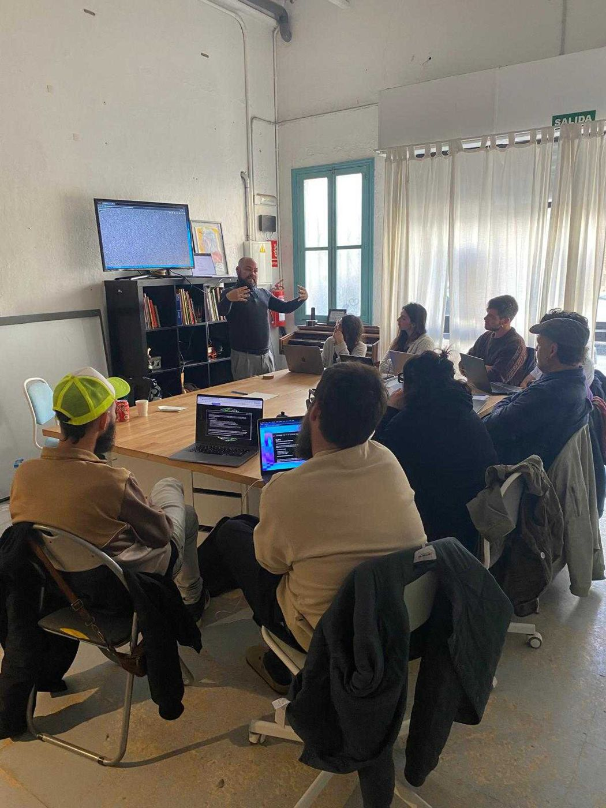
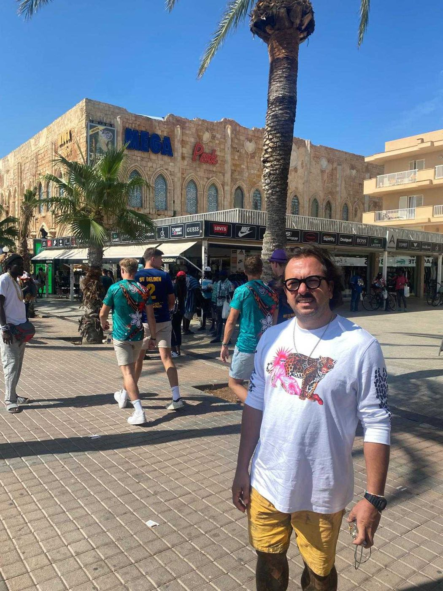
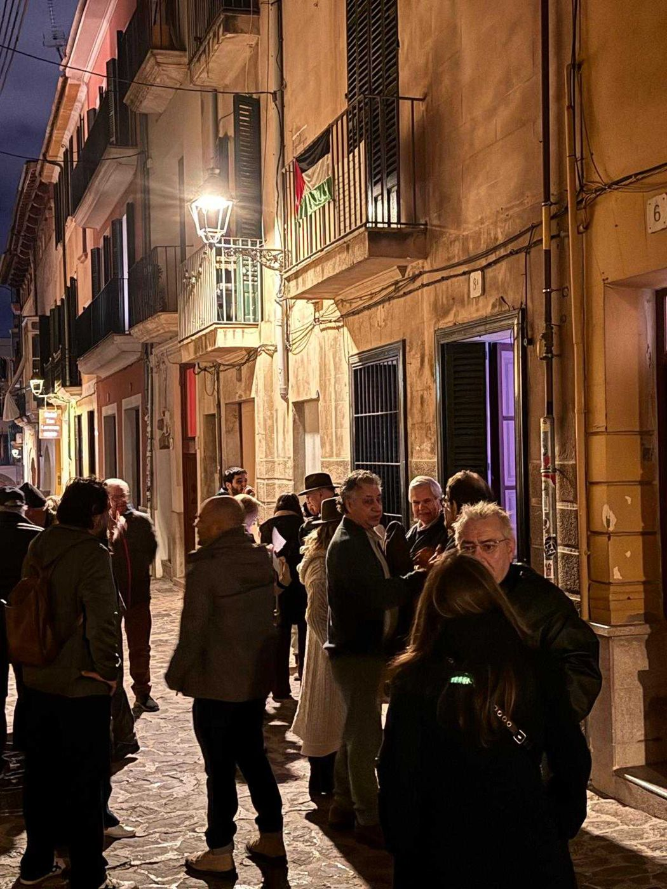
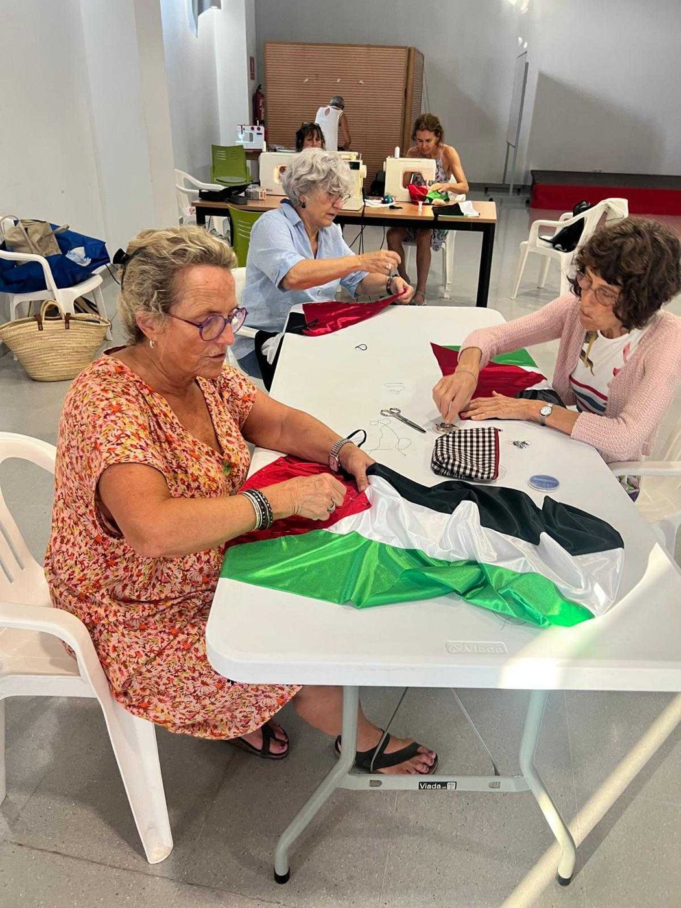
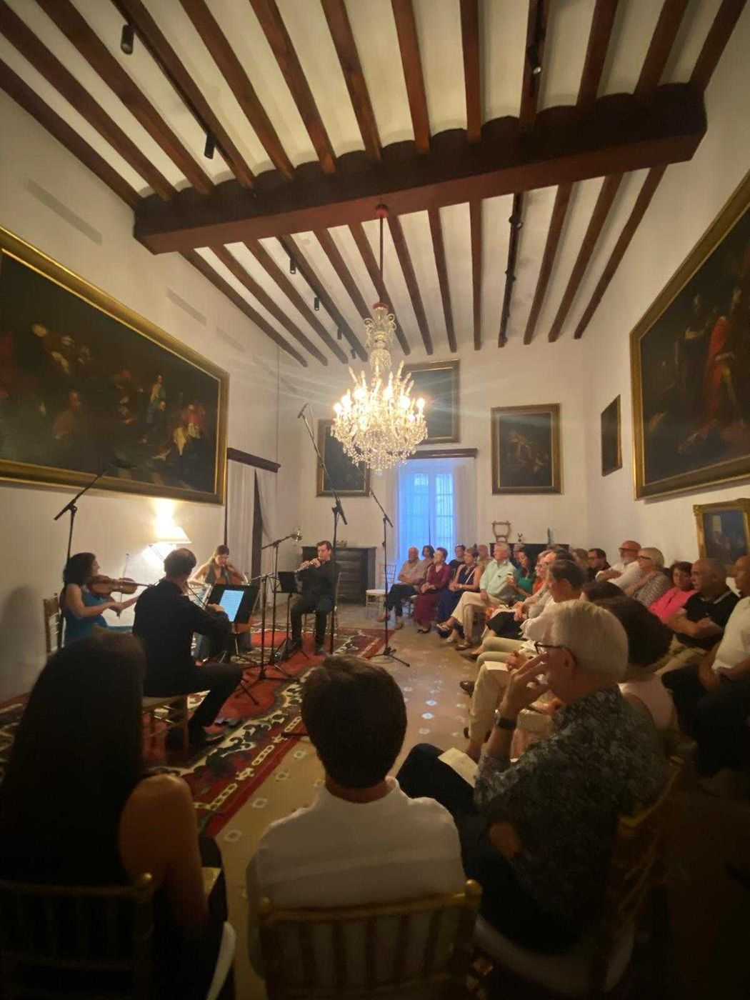
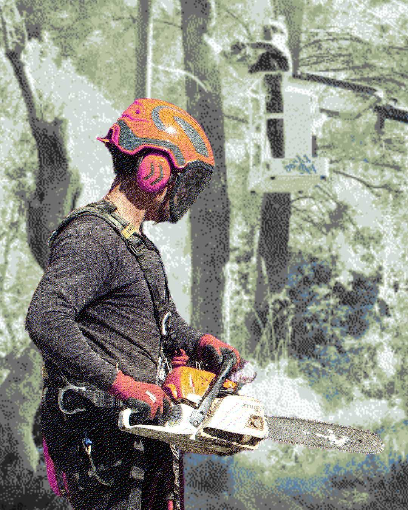

www.honestpg.com
Estudi creatiu sense ànim de lucre
Palma
Mallorca
HonestPG
L’art i la creativitat com a motor de la transformació social.
Honest és un estudi creatiu sense ànim de lucre orientat a donar suport a associacions, entitats i fundacions del tercer sector i de l’economia social i solidària.
Partim d’una constatació clara: el tercer sector no ha incorporat històricament la inversió estratègica en comunicació, disseny i publicitat com a eina estructural de creixement i incidència.
Moltes entitats desenvolupen projectes d’alt impacte social, cultural o ambiental, però el seu relat no sempre arriba amb la força, coherència i visibilitat que mereix. Honest treballa per ordenar, estructurar i amplificar aquests relats.
Missió
Impulsar la transformació social a través de l’art, la creativitat i la comunicació estratègica.
Visió
Consolidar un model d’agència especialitzada en tercer sector que integri disseny, tecnologia i mirada social.
Enfocament
L’art i la creativitat com a motor de transformació social. Des d’aquest eix desenvolupam direcció creativa, comunicació estratègica, màrqueting cultural, producció cultural i desenvolupament digital.
Línia 01
Estudi creatiu
Suport estratègic, conceptual i tècnic a organitzacions culturals i socials: webs, identitats gràfiques, materials editorials i redissenys.
Projectes →Línia 02
Art contemporani
Esdeveniments, instal·lacions, residències i programes compromesos amb la creació actual i el pensament crític.
Projectes →Línia 03
Espais de creació
Espais culturals entesos no com a contenidors, sinó com a dispositius actius que generen context, continuïtat i comunitat.
Projectes →Nova etapa · 2026
Acció comunitària
Voluntariat, xarxes de suport i iniciatives amb retorn social immediat: la nova etapa d’Honest.
Projectes →
Mapa de Ruido
Convertim el soroll en llenguatge.

Residència Saufausreden
Crear des del territori.

CUBE
Art contemporani, ben a prop.

Balcons per Palestina
Un gest quotidià de solidaritat.

Can Costa
La música torna a Can Costa.

Regenera Deià
Regenerar el territori, plegats.
- Mapa de Ruido · Càpsula 1 · Alta Intensidad →
- Videoclip Aina Losange →
- Taller de noves tecnologies · livecoding i mapping →
- Taller de fotografia Polaroid amb Margarito de la Guetto →
- Mapa de Ruido · Càpsula 4 · Síntesi Modular →
- Pàgina web · Mater Ariany →
- Campanya Balcons per Palestina →
- Conveni Cooperativa NOMA →
- Conveni Fundació Iniciatives del Mediterrani →
- Pàgina web · Fundació Tutelar Demà
- Conveni Associació ONA Mediterrània
- Pàgina web · Fundació Iniciatives del Mediterrani →
- Conveni Regenera Deià →
- Instal·lació artística (Nit de l’Art) · Ajuntament de Santanyí
- Disseny gràfic · diari dBalears (Dijous Bo)
- Pàgina web · Possessió Muntanya
- Disseny de packaging · Cooperativa NOMA →
- Inauguració de l’espai d’art contemporani CUBE →
- Residència Saufausreden 1 · Margarito de la Guetto →
- Residència Saufausreden 2 · Llorenç Garrit →
- Instal·lació artística · Lens Festival
- Pàgina web · Can Costa, casa natal de Miquel Costa i Llobera →
- Festival de música Nits Clàssiques a Can Costa →
- Innovació I+D · Data 2 Design
- Coworking Corall 12
- Redisseny de la revista L’Estel →
- Suport a l’associació Espacio Pulpo
- Ajuntament de Santanyí
- FIM Persones & Territori
- Mater
- Fundació Tutelar Demà
- Acadèmia del Clima
- Palma XXI
- ONA Mediterrània 98.0 FM
- Fundación Aldaba
- Can Costa
El que sovint ens demanen.
Honest és una agència?
No som una agència a l’ús: som un estudi creatiu sense ànim de lucre que ajuda els qui ajuden. Acompanyam cada projecte de dalt a baix, de la idea a la posada en marxa, amb rigor, creativitat i honestedat.
Amb quins tipus d’entitats treballau?
Associacions, fundacions, cooperatives i projectes de l’economia social i solidària, sigui quin sigui el seu moment. Adaptam el suport a la posició i les necessitats de cada entitat.
Què cercau en els projectes amb què col·laborau?
Ens uneixen els projectes que volen transformar el seu entorn, que comparteixen la nostra manera d’entendre la comunicació i que es comprometen a fer les coses ben fetes.
Quant dura una col·laboració?
Depèn de l’abast. Un projecte complet sol durar entre uns mesos i un any; els encàrrecs puntuals —una web, una campanya, un disseny— són molt més àgils.
Com funcionen els convenis?
Formalitzam convenis de col·laboració amb cooperatives i entitats per establir aliances estables que van més enllà del marc administratiu i esdevenen processos reals de cooperació.
Puc fer voluntariat amb Honest?
Sí. El foment del voluntariat i l’acció comunitària és l’eix principal de la nostra nova etapa. Escriu-nos i t’explicam com participar.
Feis publicitat de pagament?
Podem preparar les peces i les campanyes, però no compram ni gestionam anuncis. Sí que us donam el suport creatiu i digital perquè la vostra comunicació funcioni.